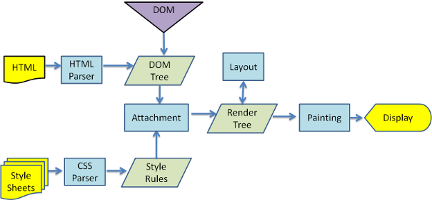
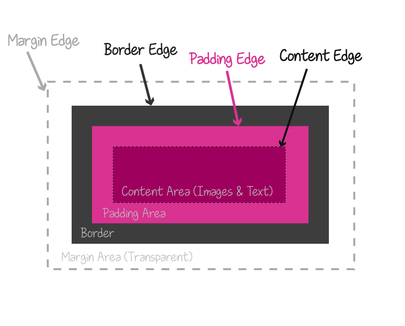
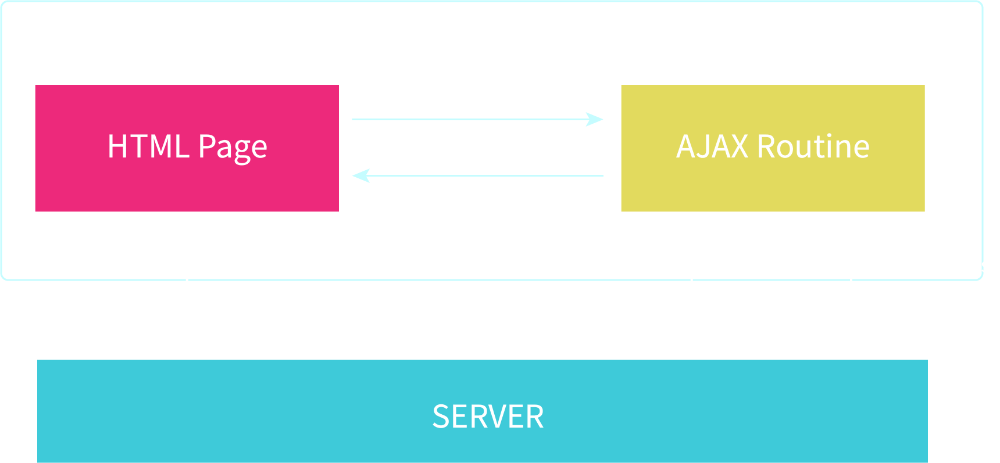

Introducción
HTML, CSS y JavaScript
Por Milagros Pérez / @harleshinn
CSS3
Cascading Style Sheets
http://www.csszengarden.com/
Es la capa de presentación del contenido
Historia de CSS
Módulos
Cómo Incluir CSS
Inline
Style
Link
Sintaxis
Estilos default del navegador y estilos propios

Normalización vs Reset
Cross-browsering/devices
https://caniuse.com/Cómo aplican el CSS los navegadores
CSSOM
Selectores
- universal
- type
- pseudo-class
- pseudo-element
- class
- id
- attribute
- combinator
Universal Selector
* { background: pink;}Type Selector
span { color: blue; } Pseudo-Class
a:hover { background: #ccc; } Pseudo-element
a::after {
content: '';
width: 45px;
height: 45px;
backgorund: yellow;
} Class
.box { color: red;}ID
#box { background: rebeccapurple; }Attribute
input[type="email"] { border: 2px solid pink;}Combinators
Adjacent Sibling
img + p { color: red; }General Sibling
img ~ p { color: pink; }Combinators
Child
ul > li { display: inline-block; }Descendant
ul li { color: pink; }Cascada, herencia y especificidad
Cascada

Herencia

Especificidad
Box model
Box Model Types
CSS Layouts
- Normal Flow
- Display
- Flex
- Grid
- Floats
- Positioning
- Table
- Multi Column
Responsive Web Design
...You put water in a cup, it becomes the cup; You put water into a bottle, it becomes the bottle; You put it in a teapot, it becomes the teapot. Now water can flow or it can crash. Be water, my friendBruce Lee
Elementos RWD
- Definir breakpoints
- Jerarquizar contenido
- Definir grilla
- Control de Viewport
- Media Queries
- Maquetación líquida
- Imágenes adaptables
Control de Viewport
Media Queries
@media (min-width: 30em) and (orientation: landscape) { ... }
Responsive images
img { max-width: 100%;}Otras soluciones:
- picture
- srcset y size atributes
Preprocesadores
- Sass
- Less
- PostCSS
- Stylus
Historia de JS

¿Para qué se usa?
Incluyendo JS
Script Tag
Referencia Externa
Inline
Debbuging JS
JSON
JavaScript Object Notation
{"menu": {
"id": "file",
"value": "File",
"popup": {
"menuitem": [
{"value": "New", "onclick": "CreateNewDoc()"},
{"value": "Open", "onclick": "OpenDoc()"},
{"value": "Close", "onclick": "CloseDoc()"}
]
}
}}
AJAX
Asynchronous JavaScript and XML
PWA
Progressive Web Apps
En definitiva...